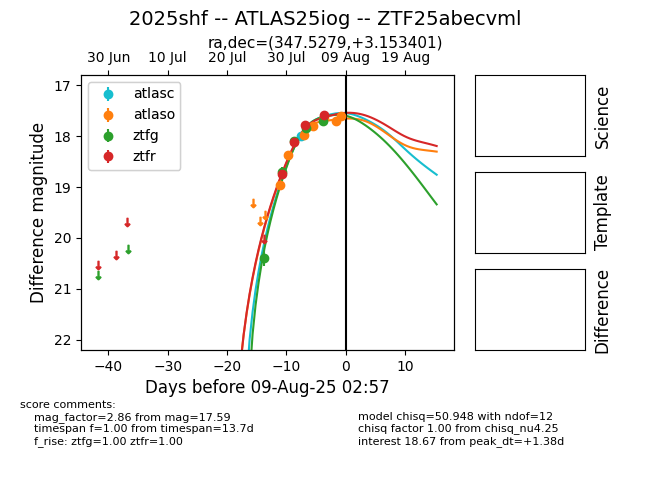

Target 2025shf at 2025-08-19 08:51, see:
FINK: fink-portal.org/2025shf
Lasair: lasair-ztf.lsst.ac.uk/objects/2025shf
ALeRCE: alerce.online/object/2025shf
TNS: wis-tns.org/object/2025shf
YSE: ziggy.ucolick.org/yse/transient_detail/2025shf
alt names
ZTF25abecvml (ztf,fink)
2025shf (tns,yse)
ATLAS25iog (atlas)
PS25git (panstarrs)
coordinates:
equatorial (ra, dec) = (347.5279,+3.15340)
galactic (l, b) = (80.0781,-51.08801)
photometry
last atlasc=17.99, atlaso=17.38, ztfg=19.12, ztfr=18.18
1 atlasc, 8 atlaso, 9 ztfg, 9 ztfr detections
